IT GROUP 16 - CYBERSOLDIERS
Quan, Romy, Alex and Gauri
Our Project Details
Introduction
Our project idea involves teaching user's internet safety/cybersecurity in the form of several interactive games. This project aims to get users to learn and be educated about cybersecurity in a more engaging way, rather than just printed words on a page. This considers the different learning styles users may have. This also aims to get users to retain and recognise unsafe internet behaviour and common methods that can cause individuals to lose their accounts or get their personal information stolen.
With how common it is for users to be naïve and fall for malicious tactics that are used to steal data, there is a dire need to educate internet users of all ages to be alert and be cautious about their actions. This can span from where their personal data is entered, to what and where users are downloading files on the internet, recognising ways to identify scams, etc. With billions of people using the internet in various ways every single day, an innovative way to teach cybersecurity is crucial to have, no matter how tech savvy particular users are. There should be something for everyone provided in this project, from simple, easy to understand tasks for novice internet users, to more challenging activities for more advanced individuals. The newer generation may be more aware of internet safety, but older generations such as the elderly and even older adult populations that are not used to modern technology may need more guidance.
Description
This project will be presented in either a mobile application or webpage format. There will be 3 games included that would be suitable for a daily or endless challenge model. The games will also be suitable for all skill levels, whether the user is a novice or advanced with their knowledge surrounding internet security / cybersecurity. These games will also focus on different aspects that the topic covers. For each game, there will be a matching cartoon that serves as a help guide for the user. It will teach the user how to play each game and the rules in a visual format. There will also be a general description explaining to the user what cybersecurity is if the user is completely new to the topic.
The first game will be a guessing game that will focus on teaching users how to not fall for malware or common scam tactics. The ‘decrypted’ information will either be an important keyword, sentence or even a paragraph depending on how difficult the user decides to make the puzzle.
The user will have a set number of mistakes they are allowed to make, from 10 mistakes maximum to no mistakes at all (sudden death). For each letter in the ‘encrypted’ string, the user will attempt to guess what letter it should be when it is decrypted. For example, the letter ‘C’ in the encrypted string may correspond to the letter ‘A’ when decrypted. If the letter is in the string, but the user guessed it in the incorrect spot, the user will be notified that the letter is in a different position. If it is not there at all, the user will be told that the letter is not present in the decrypted string. If the user wants to put more pressure on themselves for a challenge, the user can choose to set a time limit. If the user makes more than the allowed number of mistakes or they run out of time, they lose.
The second game will take on a more traditional quiz format, where the user is presented with multiple answers to a question and must pick the correct one. The questions will relate to various cybersecurity and internet security topics. The user will have 15 seconds to pick out of 5 possible answers. There will also be a hint system, that can be used once per question to help the user discern what answer might be the more correct one if they are stuck. The user will start with 5 hints. The user also has 3 “lives”, that serves as the number of incorrect guesses they can make. If the user picks an incorrect answer, they will not be allowed to guess for that same question again and they will lose a life. If the user loses all 3 lives, the game will end. There will be bonus question milestones at every 10th question that if it is answered correctly, the user can choose if they want to regain a life or regain a hint.
Examples of question formats that may be asked include:
Description style questions where the user will identify what the description is relating to. For example: a description of a type of malware or software.
Which is not (blank) style questions where the user identifies what is not correct, such as “Which is not something you should do to stay safe on the Internet?” or “Which is not a type of physical security?”
What is a feature of (blank) style questions such as “What is a feature of a firewall?” or “What is a feature of a modem?”
General e-safety questions such as “What is one thing you should do to stay safe while posting on social media?”
The last game will focus on teaching users how to identify suspicious links and executables. This will be a game that allows the user to take their time answering the questions so they can build up their identification skills. The user should learn from this game that they are the first line of defence when protecting their device from malicious software. Easier types of questions will involve scenarios that are more descriptive and straightforward. The scenarios should allow the user to easily find out whether it would be safe to access. There will be little clues that will help, such as a video having negative comments, a clickbait title, etc. Harder scenarios will give less hints towards if it is safe or not and may include links that may be misspelt. The user can choose to take their time to learn by not having a time limit, or the user can enable a 20 second time limit to test their knowledge or to challenge themself.
Tools and Software
In terms of software and tools needed to build a working prototype of the project idea, this will depend on if we decide to make the final product a mobile application or website. Prototyping websites include Figma, Canva and Proto.io. If we decide to go with the website route, we will need to consider expanding our current HTML and CSS knowledge beyond what we know already. This will require us to learn more advanced HTML and CSS techniques online. We will most likely have to incorporate other programming languages in order to develop the 3 games (e.g., Python, C++, C#, Java etc.) We will also have to consider the different browsers that are being used, and ensure the HTML works as intended as closely as possible between the popular browser choices. A mock-up of how the website should look and function may be beneficial as well.
For the mobile application route, we will need to consider different mobile operating systems such as Android and iOS. If we were to develop a complete application, we would have to learn how to use the iOS SDK and Android Studio for both mobile operating systems. No matter what route we choose to produce our prototype/ final product, we will need to futureproof our product to ensure compatibility with new software updates. We may choose to make the final product a website due to our prior experiences.
Outcome
If this project is successful, the user reception should be positive, with the website or application being engaging and enjoyable. Their knowledge of internet safety and cybersecurity should increase to the point where they are more conscious of their actions while browsing the Internet and are able to identify if something may be harmful. This should solve the original lack of attention and awareness issue. This should revolutionise how individuals learn about cybersecurity, while still being as effective as a reading approach.
Our Team Members
Quan Tan Bui (s3948578)

I am a first year RMIT student in Information Technology. I was born in Ho Chi Minh City, Vietnam; so, Vietnamese is my mother language. I moved to Australia when I was 12 years old and have been living here ever since. I received my secondary education at the Indooroopilly State High school, Queensland and Viewbank College, Victoria. I have always been passionate about utilising technology to connect people and enhance education, particularly in developing countries. Apart from my interest in technology, I also enjoy music, cooking, photography, planes, trains, and video games in my free time. I love chatting with friends and learning more about what they are thinking about the world’s future.
Alexander Koulis (s3942717)

I was born in Carlton, Victoria, which makes me Australian. However, my cultural background and heritage lies in Greece where my grandparents were born and immigrated to Australia during the early 1960’s to escape from lack of jobs and poverty. Both my parents were born in Australia, the first-generation children of Greek immigrants but influenced by the Greek Orthodox religion and a retained culture that has followed Greeks wherever they move to many centuries. I do in fact speak Greek and understand the language, but I am not as fluent as my parents are, as they grew up with the Greek language with their parents more than I have. I have completed my highest education which was Year 12 at Emmanuel College VCE in 2021 with my subjects being English, Further Math, Psychology, Software Development (Applied Computing), VET Sport and Recreation and a bit of CISCO networking in Year 10.
Romy Nicola Tokovic (s3948714)

I am the only child of my family, born in Victoria, Australia. My mum’s side is German, while my dad’s side of the family are Serbian. I love playing video games, fawning over retro technology, and listening to my music in my spare time. I love to help solve IT issues, whether it is for my friends or family. I am quite patient with finding solutions on the Internet as well as using my prior knowledge, which I am renowned for among people who know me well. I am extremely interested in the cybersecurity, networking, and IT administration fields, and hope to specialise in either of said fields in the future.
Gauri Gupta (s3954955)

I migrated to Melbourne, Australia in 2018. I was born in India in 2003 and lived there until I was 14 years old. My parents and sister were also born in India. My hobbies include karate, swimming, reading novels and painting. I am also interested in meeting new people and getting to know them. My interest in IT was generated when I came across my laptop and wondered how it was developed. I am also very much interested in testing all the prototypes of the new devices that the market and the IT world has to offer. The main reason I am interested in IT is because it pays well. I plan to major either in Cloud Foundations or Cybersecurity.
Personality Tests
The personality tests will be beneficial to the group as they allow each of us to gain an understanding of how each member may think and behave when in a group setting. These tests also help gather strengths and weaknesses for each member in order to allocate tasks that each of us may be more suitable for. Learning styles are also important to consider as this is a factor to consider in the final product; it should cater to different learning styles by having a mix of visual, written word and possibly audio elements.
Quan's Test Results
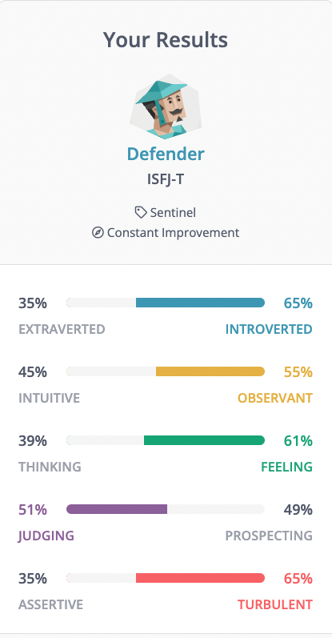 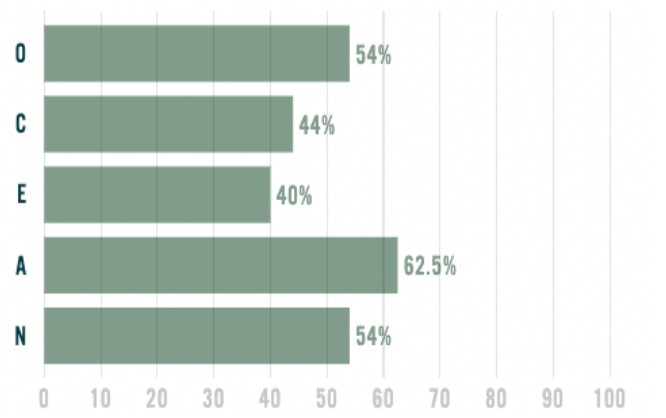 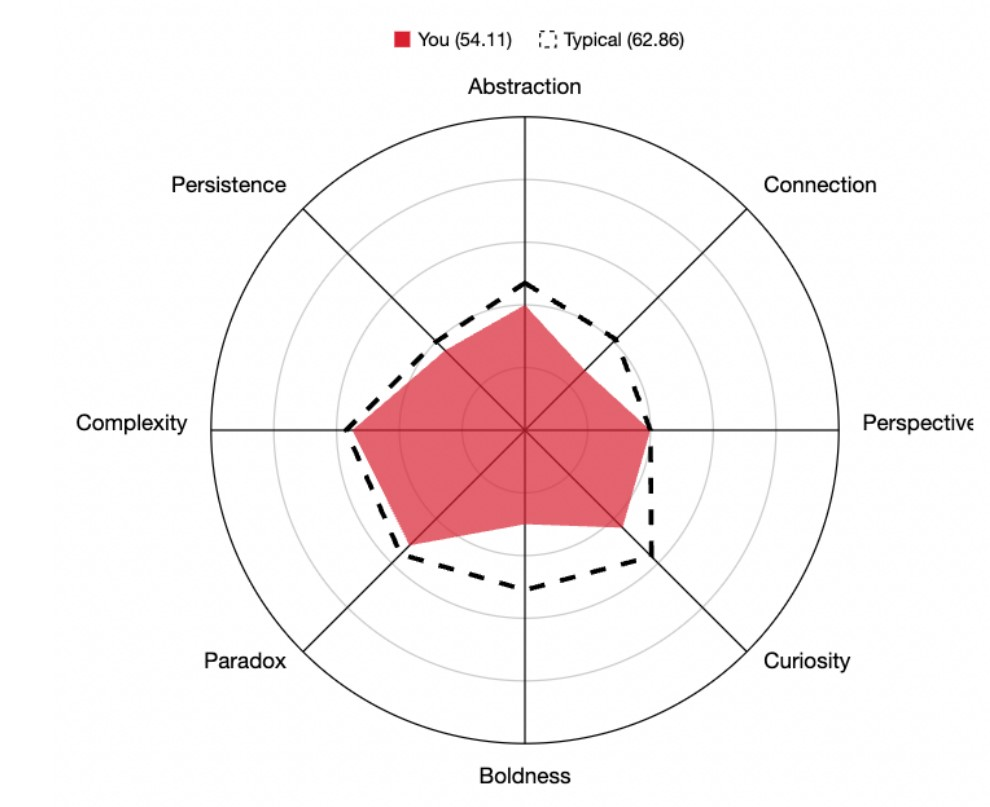Alex's Test Results
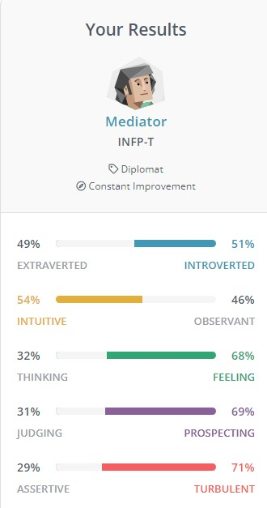 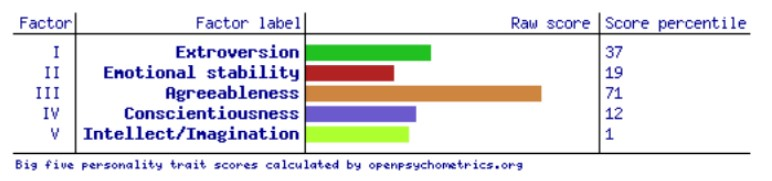 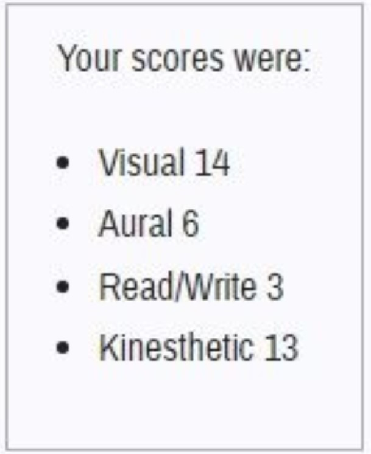Romy'sTest Results
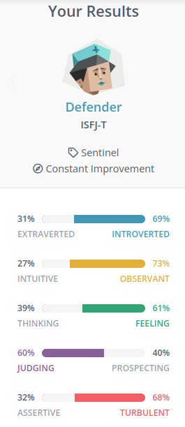 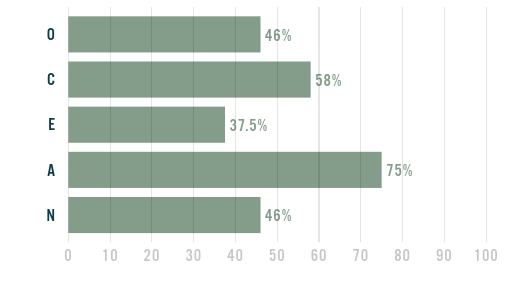 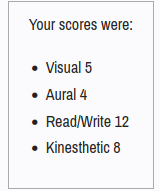Gauri's Test Results
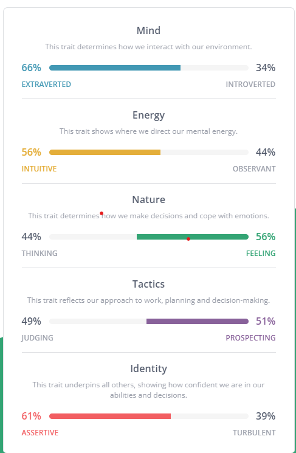 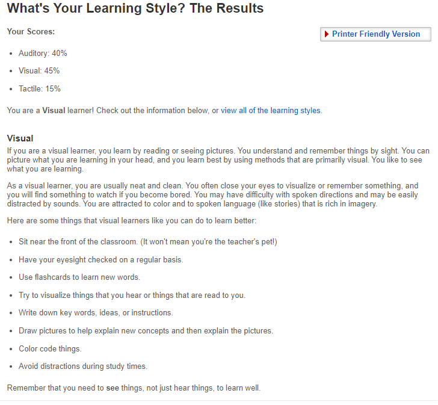 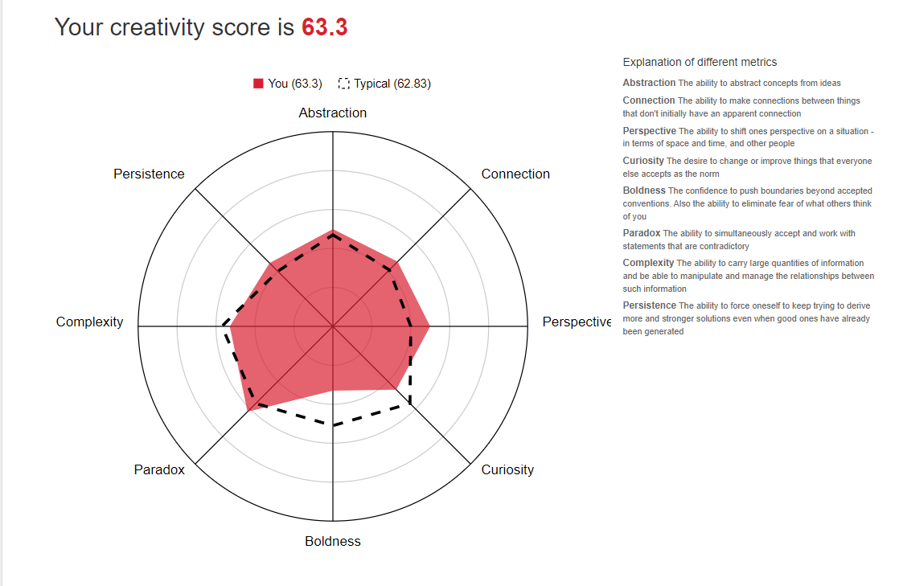Our Ideal Jobs
Quan - Full Stack Developer
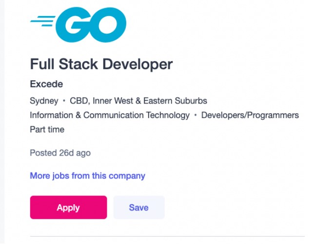A Full Stack Developer is responsible for all aspects of software from the front end to the backend. I really like this position since I can control every process of development, and I can shape the software into the product that I have envisioned. The skills required for this job is varied since there are many coding languages out there, and you can't master all of them in this short amount of time. However, mastering some very popular languages like JavaScript, Java, Python, or C++ is the best option since you can create various applications from those languages. Mastering the skills to manage a database is also very important in this job since most applications these days are so heavily data driven. In this position, it is best to know how to deploy a server on Linux. It is also important to know how to troubleshoot if a server fails. These are the skills that many companies are looking for. Currently, I am quite fluent in JavaScript and Python and have had some experience working with some database software like MongoDB and SQL. In the future, I am planning to go deeper into the world of database software and server to further improve the skills that can help me achieve my dream job. I have set out a plan that in the first 6 months of this year, I would start learning the basic of database like how to structure it in an efficient way and best fit for the application. After the first 6 month, I would spend around a year to master the popular MongoDB software. In my last year, I would try to master the industry standard of SQL.
Alex - Security Testing

One of my ideal jobs has changed due to in terms of practicality and achievability which is a Security Testing – Specialist at Telstra. Telstra is one of the biggest telecommunications and technology company taking Australia by storm in terms of their quote: “Our purpose is to build a connected future so everyone can thrive”. Security Testing is uncovering the vulnerabilities of the system and determines if the data and resources of the system are protected from possible intruders. It ensures that the software system and application are free from any threats or risks that can cause a loss. The responsibilities of this Ideal Job I will be required to do is that I must do vulnerability scans, interpret the results to identify security lapses in the system, conducting assessments of threats and vulnerabilities to proactively identify and define vulnerabilities and threats impacting the Telstra enterprise network.
On their side of the job, they fully embrace the flexibility of this job and encouraged to work in a safe and productive environment with other employees as teamwork and independence is essential within the workplace. Being able to convey and analyse data given by employees is a must for effective communication within the workplace. of the technology world.
The requirements that are needed gain the job opportunity is being an “Australian Citizen and can obtain and hold an NV2 AGSVA security clearance. Understanding of cyber threats, vulnerabilities of classes and vectors. Understanding of common vulnerability scoring system (CVSS). Tertiary qualifications in Electrical/Electronic, Computer, Network or Software Engineering; Information/Cyber Security; IT or a related discipline Understanding of networking protocols and how they relate to security Experience in scripting and coding for security data analysis (e.g., Python and PowerShell).” (Job Opportunities | Explore Jobs | Telstra Careers)
Romy - Cyber Security Analyst

One of my ideal jobs would be working as a Cybersecurity analyst. The job listing I found on SEEK was posted by Fire Rescue Victoria for a 12-month fixed term. An individual working as a Cybersecurity analyst would plan, design, and implement security detection, response, and recovery measures in the workplace. They are entrusted with the protection of ICT (Information and Communications Technology) infrastructure and information the organisation has within their network, as well as assessing the current security the organisation has for any risks and report them to senior management.
A completed Bachelor of Information Technology or equivalent is needed, as well as several years of networking and security expertise (in Fire Rescue Victoria’s case, 7 years). Optional certifications to boost chances of getting a Cybersecurity analyst position include a Certified Information System Security Professional (CISSP) qualification, a GIAC Certified Intrusion Analyst (GCIA) certification, and a Malware Analysis, Threat Hunting, Firewall Technologies, Networking and SIEM (Security Incident and Event Management) technology certification.
Gauri - IT Manager
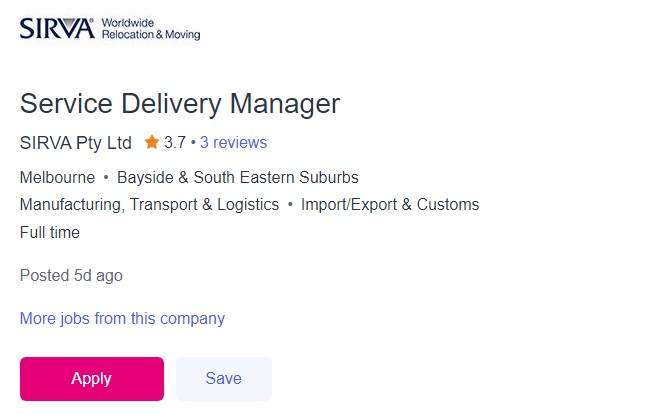Information and Computer Technology is a field in which job prospects never end. One of the ideal jobs that I would like to pursue is to be a Service Delivery Manager. This job listing was posted on seek.com.au by a company named SIRVA Pty ltd, a global organisation that aims to offer end-to-end service delivery solutions to corporations for the relocation of their staff. This position requires me to a leader towards the team that I would be leading and making sure that the relationship the client and the company is professional, and both are working with full dedication and motivation. This job requires me to ensure high quality services is being provided to both domestic and international clients by Global Mobility team.
I also need to ensure that the projects that the company is taking part is taking in are legal and need to be kept updated for projected revenue, timely and accurate completion of financial processes, KPI (Key Performance Indicator) and Service Evaluation data. The skills I require is to be a motivated team leader, being able to provide excellent customer service.
I would need to be skilled in relocation of various clients (including VIPs), being able to communicate professionally and in a respectful manner. To be a part of SIRVA’s employment, I would also need to maintain external and internal relationships, have negotiation and influencing skills, along with a demonstrated understanding of SIRVA’s leadership qualities. To be qualified for this job, firstly, I need to complete my Bachelor of Information technology where I will learn how to lead various projects. I would also need to learn how to keep track of various stages of the project and KPIs along with making budgets.
Job Comparison
| NAME | JOB TITLE | SIMILARITIES | DIFFERENCES |
|---|---|---|---|
| Alexander Koulis | Security Testing Specialist | Both Romy and Alex’s jobs relate to the cyber security role of enterprises. All our jobs are related to the IT industry. |
Quan’s ideal Job relates to his personal needs to have control over the Project and shape what he wants to bring out in his Project. Quan also needs to work more closely with the client to satisfy their needs and wants in the software. Alex’s Ideal Job differs in Security Testing to uncover the vulnerabilities of the system. It also requires him to be able to always be on the lookout from any cyber threats, vulnerability scans on a network, and define these vulnerabilities that needs to be handled accordingly. Gauri’s ideal job describes about how she needs to work with clients daily and see that the project the company is working is up-to date and properly financed. She would make sure that both the client and company are respectful towards each other and provide best customer service. Romy’s ideal job is different to Alex’s (despite being very similar in job title and description) as it has more of a planning component and requires more experience. |
| Romy Tokovic | Cybersecurity Analyst | ||
| Gauri Gupta | Service Delivery Manager | ||
| Quan Tan Bui | Cybersecurity Analyst |
Industry Data
What are the Job Titles for your group's ideal jobs? How do each of these rank in terms of demand from employers?
Romy and Alex: Test Analyst, 555 active selections
Quan: Full Stack Developer, 344 active selections
Gauri: Service Delivery Manager, 338 active selections
How do the IT-specific skills in your required skill set rank in terms of demand from employers?
Romy: Microsoft Windows knowledge: 2,699 selections, Business Analysis skills (in particular, how the security of the business functions): 2,141 selections, Technical Support: 1,830 selections, Linux knowledge: 1,632 selections, Possible knowledge of programming languages: JavaScript, C#, Python etc.: 2,946, 1.643 and 1,150 selections respectively
Quan: SQL: 3,570 selections, Microsoft Windows: 2,699 selections, Microsoft C#: 1,643 selections, Website Production: 1,366, Software Engineering: 1,372 selections
Gauri: Project Management – 2,252 selections, Business Management – 2,141 selections, Business Relationships – 2,119 selections, Customer Service – 1,411 selections, Business Process – 1,033 selections
Alex: Top title: ICT Security Specialist – 1,354 selections, I.T specific skills – Assuming Windows Experience 2,699 selections, Coding for security data analysis (Python 2,946 selections), Analytical skills – 2,679 selections
How do the general skills in your required skill set rank in terms of demand from employers?
Romy: Communication skills: 44,367 selections, Problem solving: 16,445 selections, Collaboration: 14,364 selections, Troubleshooting: 11,471 selections, Planning: 11,315 selections, Detail oriented work: 8,298 selections, Quality Assurance and Control: 4,444 selections, Management: 2,906 selections
Quan: Communication skills: 44,367 selections, Problem Solving: 16,445 selections, Planning: 11,315 selections, Collaboration: 14,364 selections, Time-Management: 5,509 selections, Meeting Deadlines: 3,346 selections, Team Building: 2,985 selections
Gauri: Communication Skills – 44,367 selections, Problem Solving – 16,445 selections, Organisational Skills – 15,844 selections, Writing – 15,590 selections, Collaboration – 14,364 selections, Planning – 11,315 selections, Detail-Orientated – 8,298 selections, Leadership – 5,144 selections, Time-Management – 5,059 selections, Quality Assurance and Control – 4,444 selections, Presentation Skills – 3,716 selections, Meeting Deadlines – 3,346 selections, Management – 2,906 selections, Multi-Tasking – 2,640 selections, Building Effective Relationships – 2,473 selections, Decision Making – 1,850 selections
Alex: Communication skills: 44,367 selections, Problem Solving: 16,445 selections, Collaboration: 14,364 selections, Time-Management: 5,509 selections, Quality Assurance and Control: 4,444 selections, Team Building: 2,985 selections, Multi-Tasking: 2,640 selections, English: 2,604 selections
What are the three highest ranked IT-specific skills which are not in your required skill set?
Romy: SQL, Java and Project Management with 3,570, 2,860 and 2,252 selections respectively
Quan: JavaScript, Java and Project Management with 2,946, 2,860 and 2,252 selections respectively
Gauri: SQL, JavaScript and Java with 3,570, 2,946 and 2,860 selections respectively
Alex: SQL, Microsoft Office and Javascript with 3,570, 1,341 and 2,946 selections respectively
What are the three highest ranked general skills which are not in your required skill set?
Romy: Organisational skills, writing and creativity: 15,844, 15,590 and 7,475 selections respectively
Quan: Organisational skills, writing and troubleshooting with 15,844, 15,590 and 11, 471 selections respectively
Gauri – Troubleshooting, Creativity and Research with 11,471, 7,475 and 7,227 selections respectively
Alex: - Planning 11,315, Mentoring 4,538, Analytical skills 2,997, Decision making 1,850 selections respectively
Having looked at the Burning Glass data, has your opinion of your ideal job changed? Why or why not?
Romy: Now that I have looked at the Burning Glass data, my opinion about being a cybersecurity analyst has changed slightly. I can see that this job does have less collaboration and teamwork skills involved, however I would still have to communicate to higher-ups about my progress and what risks I found whist analysing their current security setup. There is not a lot of writing work involved: being a cybersecurity analyst requires more problem solving and planning skills in order to create a detailed protection plan, which I like. I may wish to seek another job if I wanted more of the teamwork aspect, but this job also provides the troubleshooting and quality assessment aspects that I would like to see in my future IT job.
Quan: When I have finished looking at the Burning Glass data, my opinion about being a full stack software developer changed quite a bit in one aspect which is communication skills. From looking at the selections, I can see that collaboration and team management are one of the highest skills in demand from me. Writing also stands out for me since I didn’t know that there was this many requirements for writing skills. Writing skills is quite important in my job since we need to document every change that we make through the entire plan in order to be as transparent as possible for our customers
Gauri – After thoroughly researching my job at the Burning Glass Data, my opinion in relation to my ideal job change much because the IT and generic Skills that would support me to get the job were not properly listed in the job advertisement. One of the most important lessons that I learned during my research is that no matter the skills listed in the job, some additional skills and knowledge is always required. Skills such as Communication knowledge, leadership, maintaining healthy relationships were already in the job description. In addition to this, I realised I need to be an active participant in all the projects, make sure that they are up to date. This would require me to have planning, decision-making, meeting deadlines and research skills.
Alex: After looking through the burning class data. My Ideal Job has changed from joining the Army as a Cyber Specialist for learning technology and techniques to target cyber threats and defend Army networks was practical. However, there is a way more technical skills involved than just army networks. With my new Ideal Job being Security Testing Specialist at Telstra, this required way my prerequisite skills and had more general based skills than what I originally thought of which are Time-Management skills, Planning, Troubleshooting, and Management. Also, employers want these key responsibilities to be adhered to which are Conducting assessments of threats and vulnerabilities, developing security testing reports and finding out areas in which a security system can be improved.
IT Work
Questions We Asked - Amit X Gupta - IT Manager
What’s an aspect of the IT industry you work in?
Can you describe what do you do at work daily?
Tell me about a time you were asked to perform a task that you did not understand and what is the process for you to come up with the solutions?
Who do you interact with on a weekly basis?
Where do you spend the most of your time?
What aspect of your job that you find most challenging?
What are two or three major trends affecting the IT industry, and where do you see this leading the profession?
How do you make decisions at work? What is your process?
How have you helped innovate or improve a company’s IT infrastructure or process? Talk me through what you did.
Which has been more valuable in your career, your education, or your experience?
What do you think are the most essential soft skills for the IT industry?
Transcript Interview
Alex: “So, Hello. I am Alex as you already know, and so I'll be interviewing you about a pretty much like your job and pretty much what you do in your area…and so just start by telling me about yourself.”
Amit: “Ok. My name is Amit and I did my engineering in year 2000. After that I started working in couple of different IT organizations. Ah, so I spend around 13 years in that is my longest term in Infosys technologies and while working with Infosys Technologies, I worked with different clients. So I I spent some time couple of years in England. I spent some time in Europe, Turkey, China. Ah, and finally, in 2017 I got a opportunity to came to Australia."
"And I liked Australia so much that I decided to stay here for the rest of my life. And right now I'm working in IG. In uh, cybersecurity area. So I'm working as a manager there and the responsibility of my team is to look after the. Identity and access management for the entire organization. So IG has an footprint in Australia and New Zealand, so I'm not sure if you know about Iig as in company it's the biggest insurance company in Australia and New Zealand. So if you know RCV, RMA, RMA, CU, all these organizations are basically the child organization of IAG. So, the parent company of all these organizations.”
Alex: "I'm pretty sure the head of RACV saving myself. It is a pretty good insurance company from what I have heard.”
Amit: “Yes”
Alex: "Would you like to describe to me about like how your work daily like do you like check for certain things like what do you look for?”
Amit: “I have a team of around 20 people working with me, so we are following the scrum methodology. So if you know that you know we have different methodologies to work on IT, different projects, waterfall, iterative what? Scrum. So we are we are following these scrum methodology where we define the work in the story points. We do have a, you know, various ceremonies within the Sprint. So we our Sprint is normally two week Sprint we have Sprint planning meeting then backlog grooming meeting we have you know daily stand up where you know everyone comes and they share the status of the work which they are doing they share in case they have any risk impediments, concerns etcetera and I as in manager helped them to resolve all those things.”
"So that we complete our target within a Sprint. I'm not sure if I can talk more about the actual work which we are doing because it's bit of a confidential. It's related to the securities within the company, but this is the process we we normally follow within the organization or within my team.”
Alex: “Yeah, that's fine. Yeah, it's just more so about, like, your general job. Of course, everything has to be private for certain reasons.”
Amit: “Yeah”
Alex: “Talk to me about a time where we were asked to like a perform a task where they didn't understand, so I what was the process you come up with to solve that problem?”
Amit: “Yeah, that's a wonderful question. And it's a practical problem which I faced, you know, very often within my team, in case, you know, in new joiners comes or any movement happens within the teams and any new team member joins, they often don't understand the requirements very well. What the stakeholder business is expecting us to deliver and they misinterpret the the requirements and they try to implement in a in a different way or in a wrong way. So we have various checks and balances as at different stages of the work. So we start our work with the with the requirement gathering, we normally say as at analysis and design. So my BA comes into picture and he interacted with the business to understand the complete requirements. the BA is responsible to translate all those requirements into technical language which my engineers can understand and then they they progressed that particular work. Now we have a different.”
"Challenges where.. For example, if BA is new and he's not able to understand the requirements well. So we have a process where we do a a peer review at every stage for especially for the new joiners. So in my team we have a bit of an hierarchy. We have a leads in in every squad. So that those leads are responsible to review the work which team members are doing. That may be BA's work, engineers work or test or work or whatsoever and they ensure that they are working in an right way or right path. So that basically help us to minimize. The rework in case you know the people are going in the wrong direction and same applies to engineers when they implement the solution in a technical way.”
"We do have a various checks at a different stages once they complete their development in the in the lower environment which is our dev environment, they pass the complete details to the leads or the senior team members to verify or to review. We provide the review comments and based on that you know they. They again either to the rework or move them to the different environments, and at some stage we we involve the business stakeholders to do a testing before we hit it onto the production to ensure that the whatever they are expecting is actually on the ground and they are happy with what we are working on. So we tend to complete all these things within two week Sprint so that you know when once we start any work, we complete it within a Sprint.”
Alex: “Would you say it's a time constraint having like 2 weeks to do it? Or yeah, so would you rather have say a month or like an extra week?”
Amit: “Yeah. So that also often happens that the requirements comes to us. They are large enough to complete in a in two weeks Sprint. They need more time. So what we do that we divide those requirements into multiple smaller task and we try to complete each task within a Sprint so. Not a I would say that you know there is not a task which is greater than few days of work which we are expecting. So if we are expecting any work goes beyond the Sprint, we divide that work into multiple task.”
Alex: “Yeah. And then it all makes it easier and less time consuming than if it's just one person.”
Amit: “Correct. Yeah”
Alex: “Where do you spend the most like during your job or…?”
Amit: “So, uh, talking to the business stakeholders to understand their their concerns because you know, sometimes what happens that my BA is busy or the business is busy and they're not able to handshake with each other to complete the requirements part within a Sprint. So I need to jump in to help each other.”
“Uh, lot of my time goes into the reporting as well because we need to share the status with the different stakeholders, how we are progressing on different things since we are into the cyber security area. So a lot of different audits happen within the organization where we'll participate and we provide the different data points to the different different external auditors as well. This is how I plan along with that, I look after the finance of the team as well. For example, if I do have a. 20 Team members with me for the next financial year. How much money we need in order to give the salary to all these people and how much money basically we can get it from different teams to work on, to their project, etcetera. So I I work on to all those finance as well.”
Alex: “That does seem a lot of work”
Amit: “It seems like uh, but you know when you start working on to these things, you do a a proper time management. You are able to do it because certain task are time dependent. For example audit happens you know quarterly or some audit happens you know by yearly et cetera. And this finance you know basically takes a time lot of time during the start of the financial year. But over the period of time you just need to verify the actuals which are coming from the salaries and other areas to ensure that we are on the right track.”
Alex: “Yeah”
Amit: “And we need to provide different reportings to the, to the stakeholders. Automation plays a big role here. I understand that you know a lot of tasks are manual in this in this nature. So we need to identify the. Uh, areas where we can automate different things. This is how you know I I used to manage. So initially I used to do a lot of things manually, but I identified those areas with the help of team. I automate all those things. So as soon as I update you know in one place all my graphs and everything got updated automatically which I can share with different teams or different stakeholders.”
Alex: Yeah, uhh so what’s like… Like what aspect of your job that you find is like the most challenging in your area.”
Amit: “The most challenging thing is, uh, the various cyber threats which we have, you know, during the COVID, you know these threads has increased a lot in the past because people are trying to make easy money, et cetera, and they try to hack different systems. So we need to control all those threads and it's basically a everyday new challenge, you know, which comes up in front of us."
“Along with that, you know during the COVID lot of people or I would say that 100% of the workforce was working from home, right and no one was coming to office. So it means that, you know, we need to build the infrastructure in a way that the VPN, virtual, private network, you know, that takes up the load of the entire organization. Normally what happens, you know, in in most of the organization the VPN bandwidth is not big enough to hold the, you know, complete organization on the VPN. ”
“So we need to build that particular infrastructure again and we didn't had much time to do that because the lockdown happened, you know, so quickly and we need to act very quickly so that people should be very productive. So yeah, that is that is kind of an different opportunities, different things which we are getting and there is no stopping to these things. You know that is going to happen and that will continue to happen.”
Alex: “It's like a constant. Like a backlog of so many things happening all at once that you just have to act quickly.”
Amit: “Correct. Yeah. Not only that. Even you know the the software part that is that is changing so rapidly. We are getting the new versions of the different softwares which organization is using. We are getting new softwares you know within the organization to implement and we are responsible to do the single sign on doing the identity management of all those softwares within the team. So we need to do a complete role engineering role based access to different people within the organization to ensure that right set of people are getting right access to the different tools or softwares within the organization.”
"So that is also a kind of a challenging part. Yeah. Not only that. Even you know the the software part that is that is changing so rapidly. We are getting the new versions of the different softwares which organization is using. We are getting new softwares you know within the organization to implement and we are responsible to do the single sign on doing the identity management of all those softwares within the team. So we need to do a complete role engineering role based access to different people within the organization to ensure that right set of people are getting right access to the different tools or softwares within the organization. So that is also a kind of a challenging part.”
Alex: “And so, how do you make those hard decisions. Like, what is the process of dealing with all these challenges you face?”
Amit:” So we do have a core team. Uh. It's not only me who is making the decisions because lot of decisions are dependent on the design and architecture of various solutions. So I involve the architecture team in it who provides the inputs.”
Amit: “I do have a lot of Assamese within a team who are very experts, very technical and they help me to take the decision. So they gave me the technical inputs. My responsibility is to translate those technical inputs into the commercial layout or in our business layout to present it to the business that how much time, how much money we need to do this particular job. This is how we plan for different decisions. Along with that, I understand that you know business. Is always not ready to give us the money which we ask for, so we need to go with the different options.”
"For example, the strategic solution for any problem would require, you know, one year to implement it and will require you know X amount of money which business don't have. So we go with the option B technical solution that you know this is how we can solve this problem in a short term with low money. But that is not a strategic solution you know for the organization maybe going forward we can implement this as strategic solution.”
Amit: “So this is how. We come up with a different option and it's not only me who takes the decisions, I do have a team, you know, who helps them to take the decisions.”
Alex: “That's amazing work. And I would say I'm very impressed of how much like thinking and how much like decision making, how much teamwork is involved. I'm astonished. And would you say those are like the most essential like soft skills like communication, teamwork, organization, time management.”
Amit: “Yeah, that that is one of the very, very, I would say most important aspect you know to look after the team, uh especially you know during the COVID timelines in the last two years, most of the team members were at home and they had a different challenges and problems because. Most of the people are like isolated in their own home, so in order to motivate them to get them to get the good productivity, we had certain programs within the team where we give the opportunity to different team members to do a great and meet. We invite people for a coffee. Even within a lockdown within the range of or the limitations, you know, which governments put in, we'll try to have a different quiz programs online.”
"We try to have team engagement activities online, etcetera, to engage the people, to ensure that everyone is good. Along with that, I do have a one to one meetings with everyone. By monthly to check with them that you know how they are doing in case they have any problem, that may be a personal professional financial. Anything they can they can open and share it with me. So sometimes you know once you hear the problem whether you provide the solution or not the second person feels good. You know. So that is the that is the idea that you know provide the best well being to the team members.”
Alex: “Yep, I guess the wellbeing is more important on your team. Then really above than anything else because you also want a lot of help.”
Amit: "Right.”
Alex: “So I would like you to tell me as well how have you helped innovate or improve a company's IT infrastructure or process like talk me through on what you did.”
Amit: “Yeah. OK. So when I joined the organization, we have a different different teams within the space. For example, the development team is different. Operations team is different. The support team is different and they all were working in isolation. They were not talking to each other and that was a challenge. And that was not only within my team, it was a challenge across the organization. So we come up with an idea to implement DevOps within a team so. DevOps is kind of a concept where one person does you know everything he does the development, he does the operations, he does, the support and everything.”
"So that gives an opportunity to the entire whole team to work to work in a single team and provide or you know share their skill set, share their knowledge with each other along with the processes and help each other and work towards the team. So this is how you know, I was able to consolidate the entire team together. And now you know we ship the team here and there and there and everyone is involved into development, design operations everywhere. So that basically motivated people as well because they are learning new things. They are, they are more vocal. They are talking to each other because whenever they are facing problems, they don't hesitate to go to other team members asking for help which improves the communication between them resolve the you know things pretty quickly and they are learning so. Which is the best part.”
Alex: “Yes, that's good. That is because I believe I communicate. To also. Like uh, I'm trying to think like, provide. I guess to help you. With like your personal problems. Also, understanding like your job more if they need help with a certain area, I feel like that's really important.”
Amit: “Absolutely. Let me give you a very small example. For example you are working from home. You are a student and you are at home and you are not going to university and you have a few questions which you want to ask to your lecturer right. Now while you are working at from home you need to book a meeting. You know for 15 minutes or 30 minutes with your lecture are to ask those questions. That might just take, you know, 5 minutes to ask those questions and get the response. But you know you need to wait for a little longer to schedule the meeting.”
"There is some admin efforts, you know going on etcetera, etcetera. But if you are, you know talking to the professor face to face or if you are going to university often, you can ask those questions you know whenever you meet you know just in two minutes and he can clarify. So basically 30 minutes of meeting can happen in just five minutes. If you are communicating well with each other face to face et cetera. So that is the objective to reduce the time of the meeting to get the desired output of the meeting in a quicker time.”
Alex: “I can agree with that because I guess the sooner you speak up about something, the better like the result will be, yeah.”
Amit: “Absolutely.”
Alex: “Which has been like the most valuable like in your career, like your education or your experience?”
Amit: “I would say experience matters a lot. Uh, because personally. I feel that, you know, when I completed my education and after that when I started my job, definitely my education helped me to start my career. But during my career, during my initial years of working, I learned a lot because books or, you know, small projects in university etcetera, it gives you an exposure to limited area. But when you start doing a job, you know actually on the ground you get a lot more exposure. You get a lot more opportunity to learn different things, etcetera.”
"Let me give you an example that you know in my first interview after my university, when I went there and when I completed my education, I learned Java as in technology and at that time it was Java 1.1. Java just came in and we used to do a coding into notepads. There was no editors and as such at that time and I had a limit limited exposure to the language. When I went for the interview and they asked me a few questions, I was able to respond to some of them, but some of them, you know, I never heard of those areas within the Java. So I said, oh, I didn't learn those things means my teacher didn't taught me about those things. And they started laughing, you know, they said ‘you cannot say these things into your interview’ that's why you don't know. If you know Java, you know java If you don't know, you don't know.”
"So that basically opened my eyes open my area. Then I started doing, you know, myself learning about those technologies and other things. Because at that time I understood that, you know, if I'm studying something university is or the teachers, they just give you a platform to learn. But it is our responsibility to learn and to end those things. Yeah, I believe I feel like self learning is the biggest factor because what you can always. ”
Alex: "Yeah, I believe I feel like self-learning is the biggest factor because what you can always like view things that you don't know and are you also have like a lot of like our resources as well to do like your own research. So at this current time, what are two or three major trends affecting the IT industry and where do you see this leading the profession?”
Amit: “Absolutely, let me give you an example. For example, if I want to open a restaurant right in Richmond for example, and I want to open a particular cuisine there and I am in a doubt whether it is going to work or not in that particular area. How can I be assured with the help of IT that you know this particular restaurant is going to work or not. I want to do an analysis. This is a problem statement in front of me. If I want to open and restaurant it means that you know I need to spend some money. There is a capital involved in it and if it doesn't work I'm going to lose. You know so much of our money. So I want to investigate beforehand that you know if it is a good idea or not a good idea.”
"So what I can do, I can contact Google. Uh, one of the probable solution is I can contact Google to fetch certain data. I can request for example, I can ask that you know ‘within the 10 kilometres of Richmond how many people in the age of this to this lives. Who loves this particular community, or who belongs to this community and who, like this particular taste, etcetera. Because if you remember, if you know whatever activity we are doing, we are going somewhere, we are going to a restaurant, we are going anywhere, Google is recording everything right, in some way or the other. So now, they can help me to find out this particular data.”
"Now I can see OK within the range of this to this you know age group there are so many people who live in this particular area. It means there is a probability that my restaurant may work. And if I can see OK, there is just you know, one person people out there are only 100 people who lives in that particular area, who like that particular cuisine it it means there is a less probability that might restaurant may work. So this is all IT you know which helps people to take the right decision.”
Alex: “Well, thank you for telling me all of that. My mind's way more opened into what I can and should expect in a pretty much a very big career role. Yeah. Was there anything else you wish to talk about? Anything that you think you missed and explain your answer?”
Amit: “I think we covered a lot of things here. Just one thing in in your next coming years during the university, if you get a chance to visit any organization. Alright, to work there. You know, maybe for few days. Just as in support. Just as in shadow, to see what they are doing. Actually, you know, onto the computers, etcetera. That will give you a very good opportunity to see that you know. That will help you to establish your vision. Right. So that is one of the recommendation not necessary that you know definitely needs to be done but that will help you.”
Alex: "I believe this concludes our interview. Thank you for your time.”
Amit: “Alex, thanks for your time. Thanks for inviting me. Take care.”
Alex: “Bye”
IT Technologies
Raspberry Pi, Arduino and Nvidia Jetson
Raspberry Pi, Arduino and Nvidia Jetson are all small form factor single board computers developed and manufactured by the Raspberry Pi foundation, Smart Projects and Nvidia respectively. These single board computers are very popular among developer for prototyping and enthusiast for use in their personal project because of its’ cheap cost and open-source nature. Despite all being single board computers the size of your hand, they could have not been more different in their target audience and what they are mainly being used for. At the very basic level is the Arduino, an open-source hardware and software project aims to be a cheap solution to teach the basic of robotics and programming to children by making it fun and simple.
Raspberry Pi was initially designed to be a cheap and easy solution for schools to teach students on computer science. At the very basic level, a Raspberry Pi can be used as a normal functional Linux computer, it can perform daily task like edit a word document, browsing the internet, watching video and light video gaming with the included Minecraft Pi Edition. But you can do so much more with the Raspberry Pi, one of the most popular ways is to transform it into a fully functional gaming console that could play most of the retro game from the ATARI 2600 to the PSP.
This is made possible by a software called Retropie that gathers all the popular emulator software and puts it in a very neat console user interface. Raspberry Pi foundation also makes accessories that can be attached onto the computer using their priority connector that expands the possible usage. Using the 7-inch touch screen accessory, some users have been able to create their own smart home controller just like a google nest hub that can tell them time, weather, calendar and even controls the lights, air-conditioning, and garage door with an addition of a relay module that communicate to the board using the 40 pins header. But there is quite a bit of limitation with the current Raspberry Pi due to the limit of their processing power, so the Raspberry Pi struggles in other more heavier tasks like advanced AI and image recognition.
This is where the much more powerful Nvidia Jetson X2 comes in. The Nvidia Jetson targets at the software developer market rather than the education market like the 2 other board, it aims to provide a dedicated board that is optimize for the development of Artificial Intelligence and advanced image recognition. Some application that has utilised the Jetson power includes powering an autonomous vehicle using a camera to recognise and process the information on the road. The future is very bright for these board, as technology progresses these board will get faster and faster and can do more complicated tasks.
Nvidia has set out a plan for the Jetson platform for the next 7 years, the company expected by the year 2026 Jetson can be able to be powered autonomous vehicle and help contribute to further the advancement of autonomous vehicles. These single board computers will also have a very bright future on the Internet of things or IOT sector since they can be able to help developer prototype and develop more and more polished software that can smoothly communicate with the hardware.
The creation of single board computers has more impact on people daily life than you think. The single board computers will create more jobs for the education sector since more and more schools are having new computing classes since they realise how much valuable it is to have a solid grasp of the current technology in the current landscape. This also means that demand for these board will be very high which means more jobs for the manufacturing business and fuel the global supply chain even more. More content creation job will also be created due to the high demand for quality online video content to teach and showcase students what the possibilities of these board can do.
Both hardware and software developer jobs will also be created more to cater for the growing community and demand for the board. One of the jobs that will make obsolete by this progress in technology are manual books that teaches you how to code since now the student can get a more up to date and more hands-on experience with the computer instead of just learning the theories. The group that will be benefited the most from this progress in the single board computer market are the primary and secondary school students since they now can have access to the same technology that engineers, and developers uses, and it can help fuel their passion for the technology industry. This passion can turn into career choices and the student will be better than the current engineer and software developers since they have an earlier start with more hands-on experience. The cheap cost of the hardware can also help with third world country to have access more to modern day technology.
These changes to the single board computer market will have an immense impact on my daily life and my friend and family as well, the creation of these board has initiated so many different ideas that eventually came into fruition and become Silicon Valley level start up. This technology has also been amazing for my dad who is in the agricultural industry.
Last year, my uncle and I created an automatic watering system that sends out the appropriate amount of water based on how much rain it was that day. We saved tens of thousands of dollars by using a Raspberry Pi and an Arduino to power the system and it only takes 3 days to build. Imagine a world without them, it would cost more and consume more time to create a similar system. I also use Nvidia Jetson X1 to create a powerful Minecraft server for me and my friends to play on with incredible reliability for less than half of the cost of a full-blown pc. My uncle also uses a Raspberry Pi to power his home automation system that can be easily controlled using voice commands through the Google Home system.
Clouds/services/servers
Clouds and servers are services provided in cloud computing. Cloud computing provides these services over the Internet, to "...offer faster innovation, flexible resources, and economies of scale." (Microsoft Azure) Cloud computing allows for an organisation or individual to select the services they need, lowering operating costs, easier management of infrastructure and better adaptability when current needs change. Clouds and servers have revolutionised how users access particular services, without them even realising cloud computing is the core to making them work behind the scenes.
There are various online services that currently use cloud services. Storing, backing up and recovery of data is now possible using a cloud storage system, and is accessible from any location and any device, provided there is Internet access. Audio and video streaming services such as Spotify, YouTube, Netflix etc., use servers to provide global distribution of their content anywhere and at any time. Software upgrades/updates are also provided by cloud computing to allow users to get their software up to date.
Clouds, servers, and other cloud computing services already contribute a great amount to how we manage resources and perform various tasks, however cloud computing has and will further develop to be involved in other aspects. Due to the pandemic that began late 2019, there was a need for organisations and individuals to conduct work safely without needing to be in a face-to-face environment. This is where cloud computing was able to make an impact. The use of clouds was used prevalently to allow collaboration between files, communicate between groups via email and messaging as well as accessing content.
Cloud computing allowed schools and workplaces to create an environment where individuals could conduct tasks as close to normal as possible, without the need to compromise safety. Meeting services such as Zoom and Microsoft Teams, found a new purpose by providing a platform where individuals or groups of people can meet and talk to each other. Of course, cloud computing also allowed for meetings to be hosted and stored on a server, with the information being relayed to the meeting members (usually with some form of end-to-end encryption as well). This created the hybrid working environment that is still used today in certain scenarios, mainly by workplaces and some learning environments.
More companies are predicted to switch to cloud provided services, as cloud computing continues to evolve and be used in more situations. This means the safety of using clouds and services, especially those provided by a third-party, will have to be considered further as companies decide to use more of these technologies over traditional, local methods. With computer and server hardware evolving, mainly graphics processing units and computing processors (GPU and CPU's), more complex applications may be able to be performed using cloud computing. Emerging technology such as artificial intelligence (AI), is becoming increasingly popular. In the case of AI, clouds and servers may benefit from intelligence that learns over time and with use, such as machine or deep learning.
This can allow for optimisation of resource management and automation of cloud/server maintenance, organisation and more. AI related services have already been provided to cloud services, such as Microsoft Azure Machine Learning, Amazon Web Services, Google Cloud Machine Learning Engine and more. Open-source software and services are also possible to be implemented in the near future and can allow organisations or groups to satisfy their own requirements or use the services they wish to use, in the case of open-source vs closed source software.
Open-source software allows for modification due to the source code being readily available and can be hosted on platforms such as GitHub. The concept of serverless computing is being investigated as well and has the possibility to make cloud computing more reliable, reduce the amount of backend code that needs to be written, and reduce the amount of administration needed to manage the cloud service. Essentially, instead of resources being managed by servers, they could be managed by the cloud provider in the future. The Internet of Things (IoT) framework and the Internet as a whole, are both essential to the existence of cloud computing. Without devices that can connect to the Internet, and a computer network, clouds, servers, and cloud related services would not exist, simply due to the fact there would be no online services to make use of the technology.
Cloud computing has already changed the way people store and modify files, by providing an online method separate from network attached storage or local storage. This allows for an alternative way to manage data, given that the local network or device is unable to be accessed or has been damaged due to an event, whether it is a natural disaster, unauthorised access or malware intrusion. TV programs are likely to become less popular with new generations, as video streaming services gain more traction among younger audiences. Purchasing vinyl's and CD's will most likely become obsolete as music streaming continues to gain popularity.
Buying music singles, albums and movies online may still be a concept in the future, but if subscription services continue to be popular among the masses, purchasing music may become a rarity. This will affect the way artists will gain royalties from their works. News reporters and TV celebrities will most likely not benefit from viewership from those still using a television in the future. More jobs will be created to maintain online cloud storage systems and to develop services that rely on cloud computing, as the demand for workers in the cloud computing field increases. Likewise, jobs for people responsible for maintaining LAN storage systems may decrease if an organisation decides to rely more on the cloud to store and access data.
Cloud computing personally contributes to a great amount of my daily life. Cloud storage services, such as Google Drive, have been my way to allow myself to upload, access and edit documents from any device and wherever I am. Google Drive and the office suite Google provides has allowed me to do work and have a backup of my important documents in case I cannot access my computer. My family also uses cloud storage to back up their photos and videos across the years and helps them with saving storage on their devices locally. Since music and video streaming has become more popular, my friends and I see ourselves listening to music on streaming services like Spotify rather than using physical CD media. The same can be said with video streaming, we prefer to watch content on YouTube and other online video subscription services rather than watching TV like we did in the past.
Not only can we watch the content we are interested in at any time, but we can also access shows that were previously on TV and watch them at our own pace. The way my friends, family and I communicate to others have also changed due to the involvement of servers, allowing for us to communicate online with any device as well. This spans from instant messaging services, to email and social media. While I prefer to communicate to my friends through instant messaging services, my parents like to use social media such as Facebook and TikTok to chat to their friends and for their own enjoyment. My friends and I are also able to play the latest versions of our games, thanks to updates being on-demand and readily available to download on servers. Cloud computing has also allowed for my friends and I who are attending university to join virtual classrooms in a hybrid setting, thanks to services that provide meeting rooms for students and teachers to teach and learn in.
Robotics
Robots began as small simple machines, and then has been increasing the size and robustness technology. They do simple tasks programmed by a human. These robots would simply provide better efficiency with less human work to complete certain tasks. Robotics is also used for protecting workers from most some of the most dangerous, mundane, repetitive tasks whilst creating more desirable jobs such as engineering, programming management and equipment maintenance industries. Robots have the potential to be as flexible as possible having automated tools that have greatly improved as the capacity of microprocessors and artificial intelligence techniques has rapidly increased. The new surge of robotics is in applications of artificial intelligence. Robotic technology is converging with a wide variety of complementary technologies – machine vision, force sensing (touch), speech recognition and advanced mechanics.
This results in exciting new levels of functionality for jobs that were never considered practical for robots. For example, for many years robotics has been used to be efficient and effective for car manufacturing services are produced by robots given a schematic by humans. Their tasks are to assemble the parts for the frame of a car and weld it together. This gives high value of the finished product with robot’s productivity being automated is an enormous industry and continuously growing. The current state of robotics is to build a more job safer future whilst also keeping efficiency as a crucial factor.
We cannot disregard drones as they can also be robots themselves. Either they are controlled by an operator and/or given an AI program to determine the best possible decision for travel and for maintenance such as agriculture to increase productivity for farms by check the progress of plants that are growing and as the demand for food is increasing rapidly for consumers. Also, drone is capable for future years to carry somewhat heavy loads of deliveries that customers order from home. In today’s world, we have managed to program robots to be able to replicate human movement and interaction. Boston Dynamics have pushed this limit to its fullest with their humanoid robot called Atlas has given advanced technology made to give the robot power to demonstrate the balance and human-level agility.
Atlas was intended to aid emergency services in search and rescue operations, performing tasks such as shutting off valves, opening doors and operating powered equipment in environments where humans could not survive. With Atlas being one of the best prototypes Boston Dynamics has ever created, parkour movement was implemented using advanced control system. This enables highly diverse and agile locomotion, while algorithms reason through complex dynamic interactions involving the whole body. With lightweight body of 89kg and 1.5m in height, high powered hydraulics is what enables Atlas to deliver high power with 28 hydraulics for the best manoeuvrability. Having 28 joints with a top speed of 2.5m/s. Not only is their development into a humanoid, but they have also made a sellable robot called spot. This revolutionises our way of creating more sustainable humanoids in our society using these new technologies.
The likely impact of robots taking over our jobs is inevitable. Automation, effectiveness of mass-producing products such robots working on cars that is currently at manufactures will be the obvious job take over. Transporting heavy cargo loads using autonomous technology and even drone delivery service will be in the far future. These can replace the everyday Uber Eat Drivers, Uber Taxi Drivers with autonomous vehicles having AI built instructions and certain rules the robot must follow for safe travels such as a navigation map and smart sensors all around the car to detect white lines on the road to prevent the car from driving off the road. Robots are already being implemented and automated in Sorting agriculture products from farms and other sorts of packaged items. This will great more farmers to be more focused on the quality of the farm products and maintain any land defects or products that may not be useable.
The list keeps going for jobs robots will be able to do such as Security surveillance drones/robots, customer service robots, precise surgery in hospitals to operate on humans which is starting to become a reality with the first surgical robot performing a surgery on a grape which is the one of the most hilarious yet amazing progress. This can massively affect against humans whose jobs are the core of keeping the world go round which can lead to poverty but reduce human life risks. However, even if robots will take up most of our jobs. This is where new jobs come into the picture as there will be also concurrent jobs that will not be taken over by robots that humans still need to keep the world running.
Having more roles in Education and Schooling are really one of the most important as student work is high subjective which cannot be automated as efficiently. For instance, Having many different responses from students after a test or exam. Robots can only be automated in marking multiple-choice answer questions as they are easily quantitative with only having one right answer. Another Job that will open more is Programmers and System Analysts. For coming years, AI programming itself will become a part of robots that will perform certain routines but cannot be as perfected as customer service help desks and able to learn how to reply to a customer effectively so certain customer serving jobs will most likely rise.
Robotics is and will be increasingly more common in part everyone’s daily life in the future years with more job changes and has a possibility of losing your favourite job. It would affect not just family and friends, more so globally with families having to do less in the household with everyday robots taking care of the daily house needs which will make us humans become lazier. I also believe robots will rule over our lack of precision in terms of us having to trial and error many times over whilst a robot can be easily perfected with our failures. Not onsly will robots be in fact be a part of daily life, but it will also be everywhere. There would be a sense of insecurity was you never know if robots having any listening devices hidden within the bodies of robots that may gain personal information against you.
Cybersecurity
Cyber security, also known as Computer Security, is a term used to describe the practice of protecting, shielding and securing various kinds of computers, servers, mobile devices, electronic systems, networks and data from digital malicious attacks. Depending on the context, cyber security can be divided into a few categories:
Network security: It is the implementation of protecting computer networks and data from breaches (e.g., targeted attackers or opportunistic malware).
Application security: It involves keeping all kinds of devices, hardware and software secured from any potential attacker. This process is used to prevent any kind of security vulnerability within applications.
Information security refers to shielding any kind of data used for storage and transit.
Operational security, also known as procedural security, is a risk management process that aims to view operations from an adversary perspective to protect sensitive data from falling into wrong hands.
Disaster recovery and business continuity define how an organization responds to a cyber-security incident or any other event that causes the loss of operations or data.
In terms of recent development, in research conducted last year by ConnectWise, it was reported that the main issue, ransomware attacks have been on-trend. In 2019, it was reported that a shift in hacking activity was discovered in MSP (Managed Service Providers). This report was created by ConnectWise as it came to light that business-specific information needed to be protected. To manage this new threat, in 2021, there was an increase in law-enforcement systems worldwide which resulted in fewer ransomware attacks.
AI and Machine Learning are one of the major factors that contribute to cyber protection. They make it possible for us to detect any potential cyber threat in time. As more businesses is preferring digital platforms, cyber-attacks have been increasing. “In the U.S. for example, 2021 has been a record-breaking year, with the number of data breaches by the end of the third quarter exceeding all of 2020 by 17%, according to the Identity Theft Research Center. At the same time, ransomware attacks have been increasing at an alarming rate, with the average incident costing companies more than $700,000.” (Sailpoint). AI and Machine learning can protect data by detecting any kind of anomalies that might be a potential threat and then predicting any kind of possible future breaches through algorithms. When this process is finished, a security alert is sent out when the threat is detected and responds autonomously without human intervention by automatically creating defensive patches immediately.
Several cybersecurity AI case studies came into action that was published on the IBM (International Business Machine Corporation) website. It was reported that Wimbledon (the oldest tennis brand) partnered with IBM in 2017 which helped them protect their website Wimbledon.com. As the business of Wimbledon went digital, the cyber-attacks also increased in number. Through cognitive and other aspects of technologies, crimes were detected 60 times faster than normal speed. There was also a 5x increase in the number of security incidents analysed over the course of the tournament. During the 2017 tennis tournament, no breach was taken place.
Cyber protection being offered through AI and Machine Learning has many advantages which include: an increase in the speed of detection and reaction of a possible threat. With the increase in today’s cyberattacks, razor fast detection and response is the key to success. Another advantage is that using this development, lowers IT protection costs by 12-15% in most organisations. With this development, cybersecurity is bound to get stronger as more data would be analysed and these technologies learn from past patterns to become more proficient. Although AI and Machine Learning are not completely risk-free, it is expected that they would improve over time. Machine Learning is being used to detect which branch of the network in an organisation might be heavily targeted.
Organisations and companies are also using AI to determine automatic and precise insights into any kind of malicious activity. They are also being used to find and identify any suspicious user behaviour. By keeping a track of actions of users that are unexpected, such as employees logging at unusual times of the day etc. As mentioned previously, AI and Machine Learning are also helping people by predicting any kind of threat that would appear in the future. Using the patterns that detected the previous threat, the cyber analysts can predict malware and prevent it from happening by using a manual process. Jobs that specify AI for cybersecurity are low in number and as a result, are very hard to find but one can land a job in this field if they have training in AI and machine learning. According to Emmanuel, “If you have machine learning or data science experience, you are an asset. It’s very useful to have these skills in addition to the practical usage of creating better solutions to cybersecurity problems.” [InfosecInstitute]. An individual skilled in computer science has always preferred to land a career in AI cybersecurity.
Cybersecurity is a way to protect data privacy and counter any kind of threat against it. For example, communications between people, backups in OneDrive, data in use, social media accounts etc. Through password-only authentication, even though they are not in trend anymore, data such as email accounts can be protected through it. For my family, friends and I, I would hope that cyber security would keep any unwanted user logged out of our account. It basically means that no one would be able to hack into any account that we are using. Most people prefer to have their jobs and business digital, which would mean that companies like IBM, ICS, OT and IoT Asset Intelligence, might need to work together in order to eliminate any kind of cyber threat against users. My father is an IT manager, but he also looks after the finances and any kind of online protection that the company would need in order to protect their data and their clients’ details. Cybersecurity does not only affect us but everyone who is using any kind of online or digital platform as one attack can affect millions and billions of people.
References
Indeed Career Guide. 2021. 47 Questions to Ask Someone You Admire About Their Job | Indeed.com. [online] Available at: https://www.indeed.com/career-advice/interviewing/questions-to-ask-someone-about-their-job [Accessed 19 April 2022].
Mamo, B., 2017. 7 Interview Questions to Ask IT Professionals. [online] Ian Martin. Available at: https://ianmartin.com/7-interview-questions-to-ask-it-professionals/#:~:text=7%20Interview%20Questions%20to%20Ask%20IT%20Professionals%201,Company%2C%20What%20Technology%20Will%20Make%20Us%20Stronger%252 [Accessed 19 April 2022].
Business.linkedin.com. n.d. Top Interview Questions to Ask IT Professionals. [online] Available at: https://business.linkedin.com/talent-solutions/resources/interviewing-talent/it [Accessed 19 April 2022].
Linkedin.com. 2022. Telstra hiring Security Testing Specialist in Melbourne, Victoria, Australia | LinkedIn. [online] Available at: https://www.linkedin.com/jobs/view/security-testing-specialist-at-telstra-3019124430?originalSubdomain=au [Accessed 14 April 2022].
Azure.microsoft.com. n.d. What Is Cloud Computing? A Beginner’s Guide | Microsoft Azure. [online] Available at: https://azure.microsoft.com/en-au/overview/what-is-cloud-computing/#benefits[Accessed 23 April 2022].
Buyya, R, Narayana, S, 2, S, Casale, G, Calheiros, R, Simmhan, Y, Varghese, B, Gelenbe, E, Javadi, B, Vaquero, L, Netto, M, Toosi, A, Rodriguez, M, Llorente, I, De Capitani Di Vimercati, S, Samarati, P, Milojicic, D, Varela, C, Bahsoon, R & Dias De Assuncao, M 2018, A Manifesto for Future Generation Cloud Computing: Research Directions for the Next Decade https://arxiv.org/pdf/1711.09123.pdf [Accessed April 24, 2022]
Spring, T., 2013. IN PICTURES: 15 current and future uses for drones - Slideshow - ARN. [online] Arnnet. Available at: https://www.arnnet.com.au/slideshow/521205/pictures-15-current-future-uses-drones/[Accessed 24 April 2022].
Boston Dynamics. n.d. Atlas™ | Boston Dynamics. [online] Available at: https://www.bostondynamics.com/atlas [Accessed 24 April 2022].
Mitchell, L., n.d. 7 Jobs That Won’t be Automated | Technology for Learners. [online] Technologyforlearners.com. Available at: https://technologyforlearners.com/automated_jobs/ [Accessed 25 April 2022].
Brown, S., 2020. A new study measures the actual impact of robots on jobs. It’s significant. | MIT Sloan. [online] MIT Sloan. Available at: https://mitsloan.mit.edu/ideas-made-to-matter/a-new-study-measures-actual-impact-robots-jobs-its-significant#:~:text=The%20researchers%20found%20that%20for,loss%20of%20about%20400%2C000%20jobs [Accessed 26 April 2022].
SEEK. 2022. Service Delivery Manager Job in Melbourne - SEEK. [online] Available at: https://www.seek.com.au/job/56733942?type=promoted#sol=7e437ac1bd2a24fbff415b2ff1138e0a984ee828 [Accessed 29 April 2022].
Senior Cyber Security Analyst (12 Months Fixed Term) Job in Melbourne n.d., SEEK. Available at https://www.seek.com.au/job/56283877?type=standout#sol=1d3495cafcfba1fe10cfa53e8e6c954490bf26da [Accessed 14 April 2022].
Doyle, K., 2022. AI and machine learning career paths, trends and job prospects - Infosec Resources. [online] Infosec Resources. Available at: https://resources.infosecinstitute.com/topic/ai-and-machine-learning-career-paths-trends-and-job-prospects/[Accessed 30 April 2022].
Ibm.com. n.d. Artificial Intelligence (AI) for Cybersecurity | IBM. [online] Available at: https://www.ibm.com/au-en/security/artificial-intelligence?utm_content=SRCWW&p1=Search&p4=43700068115627226&p5=p&gclid=Cj0KCQjw37iTBhCWARIsACBt1IyEdwIZnR9sXNwHEmbrXcx_Bud-TnJyDSvQLf04-_YX2A1BTq6X_HIaAq26EALw_wcB&gclsrc=aw.ds [Accessed 30 April 2022].
Ibm.com. n.d. Wimbledon 2017. [online] Available at: https://www.ibm.com/case-studies/wimbledon-2017 [Accessed 30 April 2022].
The AME Group. n.d. 5 Trends That Advance Cyber Protection. [online] Available at: https://www.theamegroup.com/5-trends-advance-cyber-protection/ [Accessed 30 April 2022].
Info.connectwise.com. 2022. 2022 MSP Threat Report. [online] Available at: https://info.connectwise.com/globalassets/media/asset-docs/ebook/2022-msp-threat-report_ebook.pdf [Accessed 30 April 2022].
VMware. n.d. What is Application Security? | VMware Glossary. [online] Available at: https://www.vmware.com/topics/glossary/content/application-security.html [Accessed 30 April 2022].
Check Point Software. n.d. What is Network Security? The Different Types of Protections - Check Point Software. [online] Available at: https://www.checkpoint.com/cyber-hub/network-security/what-is-network-security/ [Accessed 30 April 2022].
www.kaspersky.com. 2017. What is Cyber Security?. [online] Available at: https://www.kaspersky.com/resource-center/definitions/what-is-cyber-security [Accessed 30 April 2022].
Cisco. n.d. What Is Cybersecurity?. [online] Available at: https://www.cisco.com/c/en_au/products/security/what-is-cybersecurity.html [Accessed 30 April 2022].
Zhang, E., 2017. What is Operational Security? The Five-Step Process, Best Practices, and More. [online] Digital Guardian. Available at: https://digitalguardian.com/blog/what-operational-security-five-step-process-best-practices-and-more [Accessed 30 April 2022].